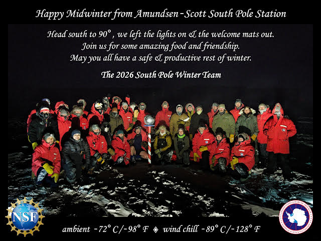
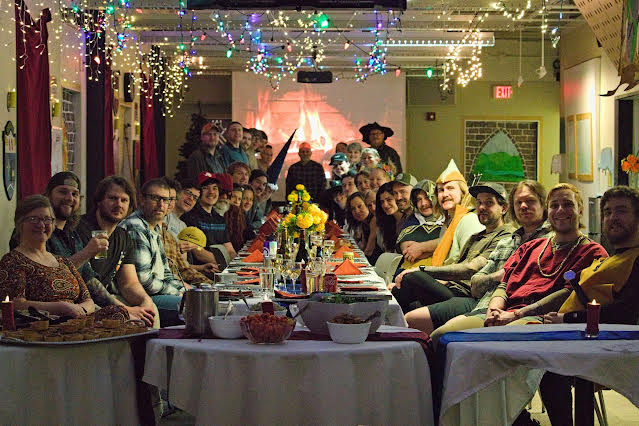

Longren Antarctic Newsletter #14 - 21.06.2026 ------------------------------ Hello friends and family, Happy Midwinter from the South Pole! Midwinter is celebrated across Antarctica on winter solstice, where the Earth is tilted farthest from the Sun. From our perspective in the southern hemisphere, today marks the day that, rather than descending, the Sun has begun rising back towards the horizon. It will take until September for the Sun to rise above the horizon and begin the summer season. Earlier in June, we gathered outside for a photo on the coldest day so far. At that time, the ambient temperature had dropped to -72°C (-98°F). A tradition each year is for every station around Antarctica to share a greeting card. Here was our greeting card this year that I helped design.  The Midwinter greeting card from the South Pole. A couple days ago, the galley treated the station to a lovely dinner to celebrate Midwinter. The evening was medieval themed, which was a lot of fun. Each work department designed a crest. There were a lot of great costumes, too. For mine, I gathered a few thousand pop tabs over the past couple months and created a chainmail shirt.  The South Pole crew before Midwinter dinner. Coincidently, Midwinter also marks the halfway point through my time here at the South Pole. I've already made great friendships, accomplished a lot at work, and have completed a few projects. The Sun is only on its way up from here on out! Excited to see what the rest of winter brings. Warmest wishes, Luke ------------------------------ ------------------------------ Previous newsletters can be found on my website. |